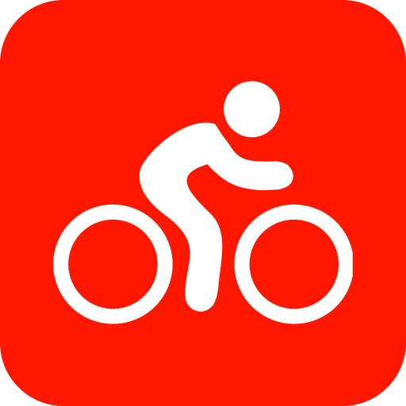

Cycling GPS & Ride Tracking
Track Smarter.
Ride Safer.
MapMyRide helps cyclists record rides, discover routes, and improve performance through GPS tracking and ride insights.

What is MapMyRide?
A GPS Tracking App for Cyclists
MapMyRide is a cycling GPS application that helps users track rides, find routes, and monitor performance. It offers live tracking, ride data, route discovery, and challenge features that make cycling more organized and motivating.
How To Use
Start Riding with MapMyRide in 6 Steps
Create an Account
Sign up and set up your cycling profile to begin tracking rides.
Enable GPS Tracking
Allow location access so the app can record your route and ride statistics.
Start a Ride
Tap start before cycling to track time, speed, distance, and route details.
Review Your Ride Data
Check your summary after each ride to monitor performance and improvement.
Discover New Routes
Explore route suggestions and saved rides from other cyclists.
Join Challenges
Stay motivated by participating in cycling challenges and activity goals.
VIDEO TUTORIAL
See MapMyRide in Action
App Capabilities
Core Features
GPS Ride Tracking
Track distance, speed, time, and route details in one place while recording every cycling session.
Route Discovery
Find nearby cycling routes and explore paths shared by other users in the community.
Performance Insights
Review ride summaries and progress data to better understand your cycling habits and improvement.
Challenges & Goals
Stay motivated with app-based challenges, milestones, and activity goals for regular riding.
Benefits
Why Cyclists Use MapMyRide
GPS Ride Tracking
Record routes, time, speed, and distance with clear ride summaries.
Route Discovery
Find and explore cycling routes that match your location and goals.
Ride Guidance
Use route guidance and app-based tools to make rides more organized and efficient.
Evaluation
Pros & Cons
Pros
- Simple GPS-based tracking that is easy for casual cyclists to use.
- Useful ride summaries for distance, time, and route review.
- Helps users discover new routes and community-based cycling paths.
- Challenges and goals make it more motivating for regular riders.
Cons
- Some advanced analytics are less detailed than training-focused cycling platforms.
- Route recommendations may vary depending on location and available community data.
- Not as immersive as indoor cycling or highly specialized performance apps.
- Some premium features may require a paid subscription for full access.
Verdict
Final Review
MapMyRide is a practical and beginner-friendly cycling app for tracking outdoor rides. It works well for cyclists who want a simple way to log routes, review ride data, and discover new places to ride. While it may not be as advanced as more performance-focused platforms, it remains a solid option for everyday fitness tracking and general cycling use.